KiCad · LTSpice · PCB · EE 202L · Spring 2026
Electric Guitar —
196 Hz Notch Filter PCB
Overview
This is the electrical half of our EE 202L guitar project. The objective was to design a filter that suppresses exactly 196 Hz — the fundamental frequency of an unfretted G string — while leaving all other frequencies unaffected. The circuit was then fabricated as a custom PCB, soldered, and installed inside a hand-built guitar body.
The project was completed in collaboration with Braden Ling, who led the circuit design and KiCad layout. I contributed to the LTSpice simulation, SMD assembly, troubleshooting, and final system integration. The work below reflects both of our contributions across the full design-to-deployment pipeline.
The filter successfully attenuated 196 Hz by over 20 dB in simulation, with targeted notch behaviour verified on the oscilloscope before final installation.
Circuit Design — LTSpice Simulation
The circuit combines two stages: an inverting gain stage and a twin-T notch filter. The gain stage, built around an LM741 op-amp with RF = 9kΩ and RG = 1kΩ, provides approximately 20 dB of gain across the audio band before rolling off around 90 kHz — well above human hearing range. This was first validated in LTSpice independently before being added to the full circuit.
The notch filter itself uses the twin-T topology with a TC7660 charge pump to generate the split ±9V supply required by the LM324 quad op-amp. Two trimmer potentiometers (R1 = 3.612kΩ and R3 = 1.8455kΩ) allow fine-tuning of the notch frequency on the physical board. The final circuit drives its output through a 10µF coupling capacitor to the audio jack.
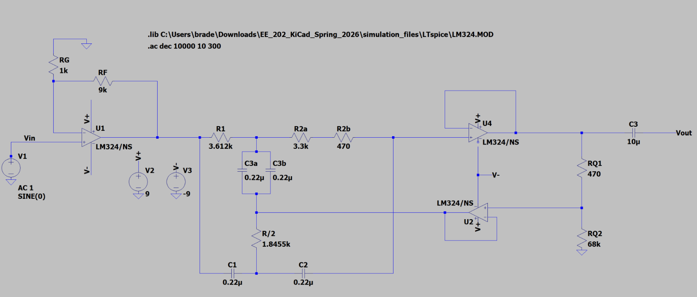
Complete LTSpice circuit — gain stage (left) feeding into the twin-T notch filter with LM324/NS op-amps and TC7660 charge pump.
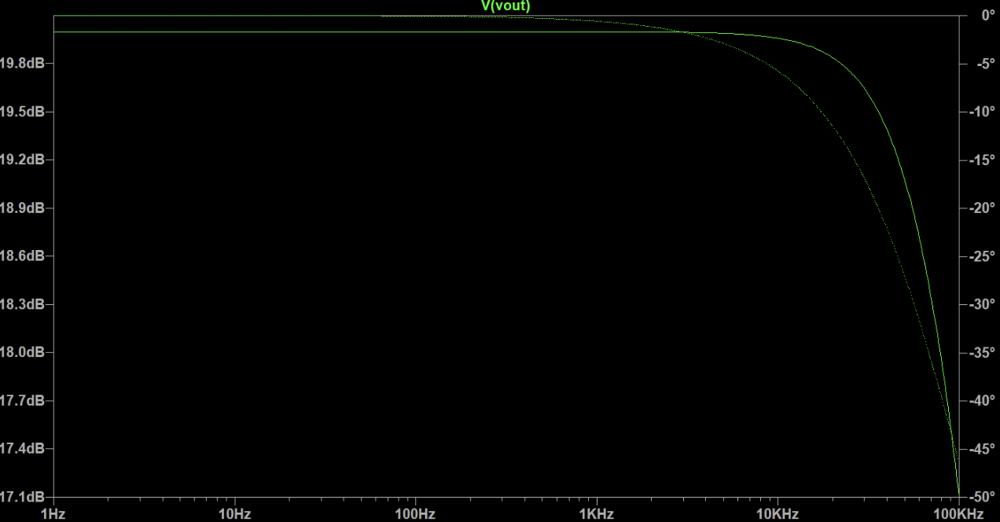
Gain stage Bode plot — flat ~20 dB across the audio band, rolling off above 10 kHz.
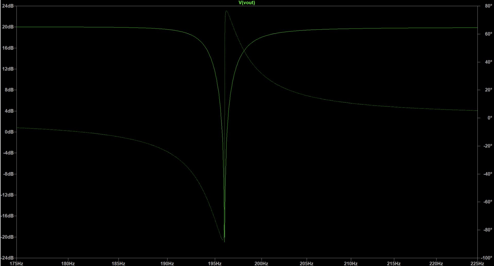
Full circuit Bode plot zoomed to 175–225 Hz — the notch drops over 20 dB precisely at 196 Hz.
PCB Design — KiCad
The verified LTSpice circuit was recreated in KiCad. Since the design includes components not in the default KiCad library — two trimmer potentiometers (TRIM_3296W-1-502RLF), one LM324 quad op-amp, and one TC7660 charge pump — their footprints were sourced from Digikey and course-provided files and imported manually.
The board uses a 4-layer stackup (Front, Ground, Power, Back) at 1.4" × 0.9". The ground and power planes are split horizontally — V+ on top half, V– on bottom half. One routing challenge stood out: the feedback resistor RF needed a trace to trimmer R1 that couldn't be routed on the surface layers without crossing other traces. The solution was a through via into the ground plane, a technique demonstrated by the course instructor. Braden's initials are etched into the PCB silkscreen as a personal touch.
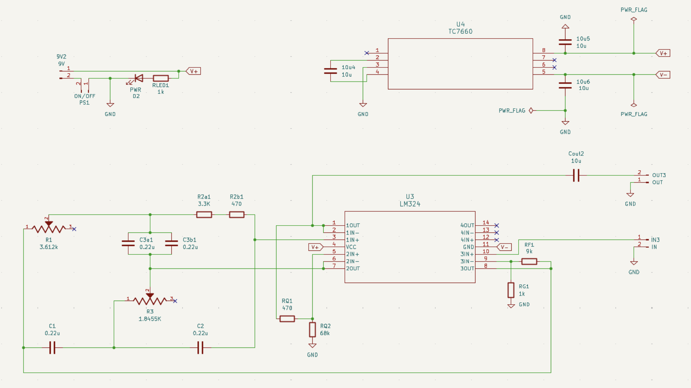
KiCad schematic — the full circuit including power supply, gain stage, twin-T filter, and output coupling.
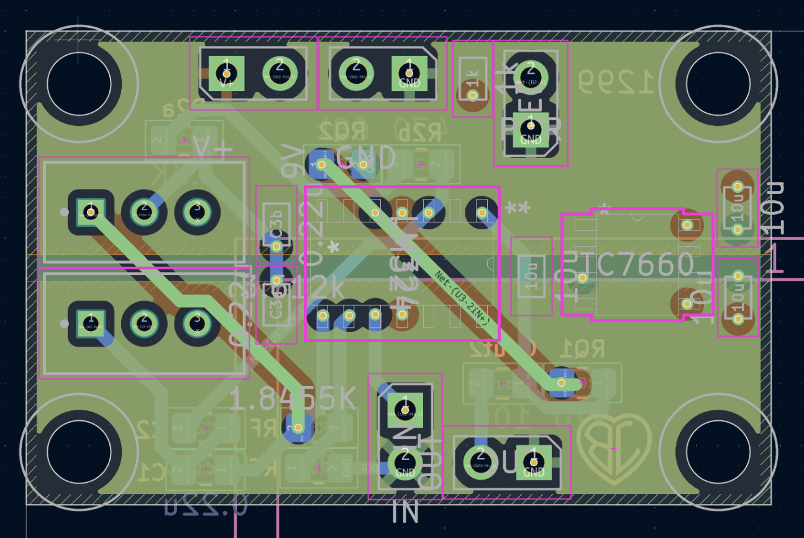
PCB layout in KiCad — 4-layer board at 1.4" × 0.9". The pink regions show power and signal routing across layers.
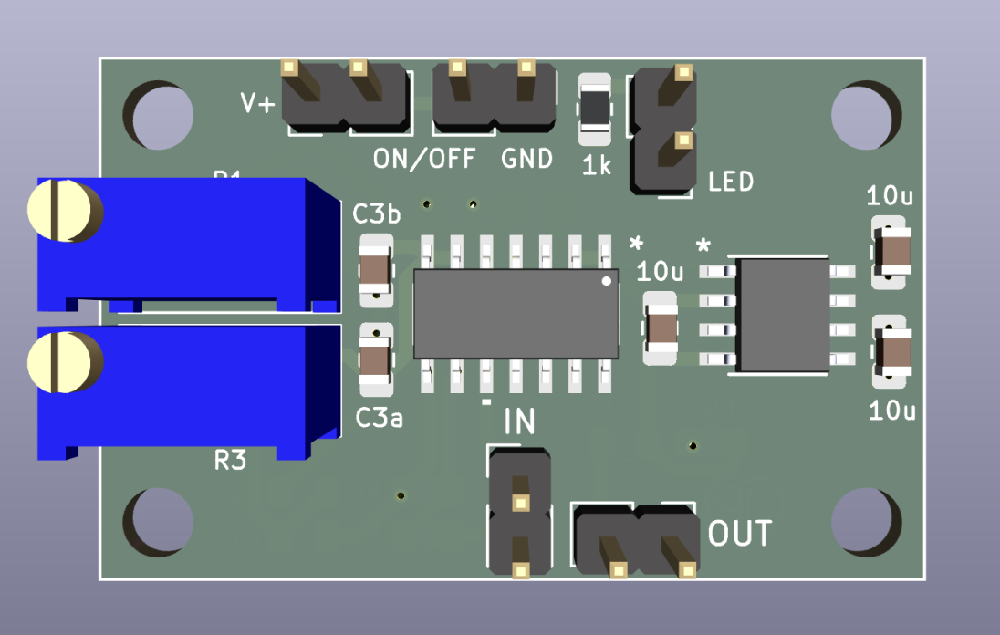
3D front render — LM324 quad op-amp and TC7660 charge pump mounted centrally, trimmers in blue on the left.
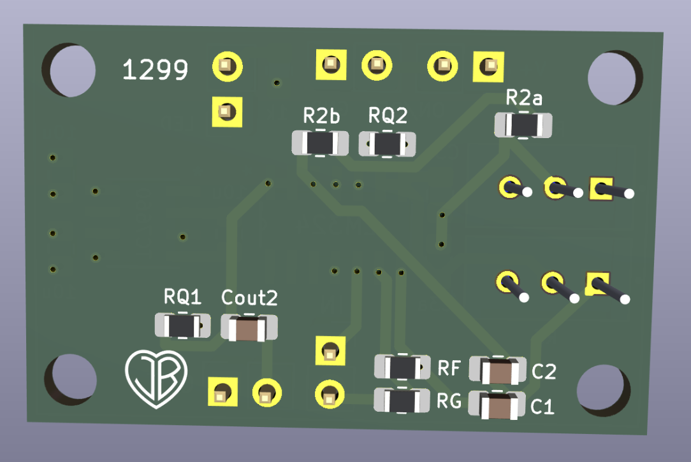
3D back render — SMD resistors and capacitors on the rear face. The "JB" heart logo is etched into the silkscreen.
Fabrication & Soldering
The PCB was fabricated externally and arrived late — after the guitar body was already finished. The surface-mounted components on the front face were placed using solder paste and reflowed on a hot plate. Hand soldering followed immediately to reinforce joints where reflow contact was weak — a step that proved critical: intermittent bad joints were the first source of distortion when the circuit was first tested on the oscilloscope.
The back-face SMD components were soldered entirely by hand. The through-hole components — trimmers, battery connector, and toggle switch — were installed last. One persistent issue was the switch detaching from the board when the assembly was being fitted into the blue box. It was re-soldered using a pin header with female jumper wires to give it enough mechanical slack to survive the tight fit.
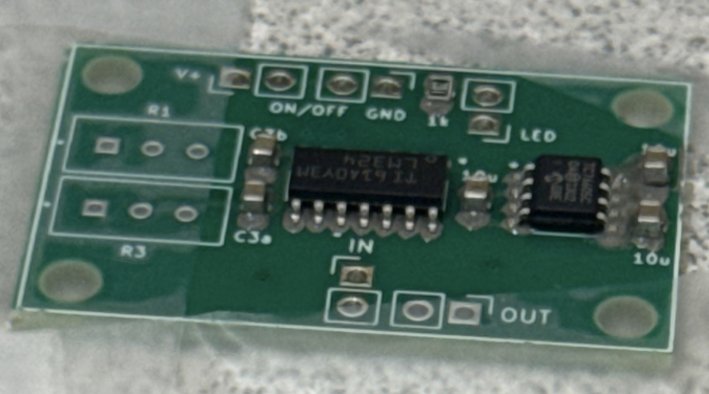
PCB front face before the hot plate — SMD components placed by hand into solder paste, ready for reflow.
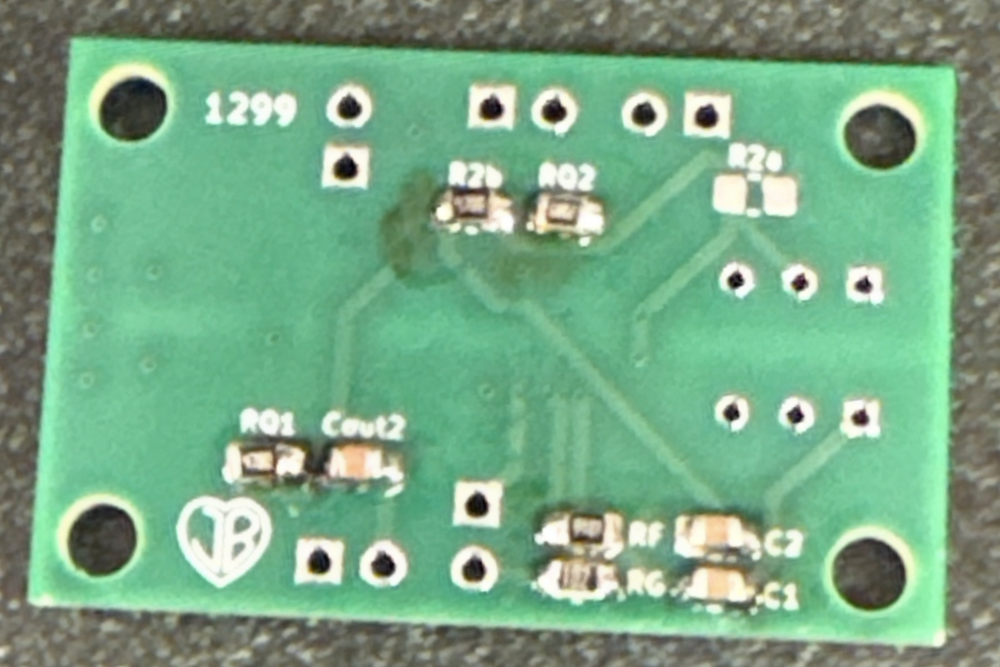
Back face after hand soldering — SMD resistors and capacitors including RF, RG, C1, C2, RQ1, RQ2, and Cout2.
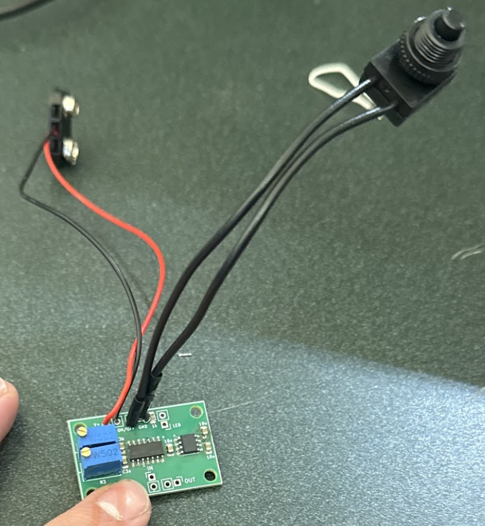
Board after installing the toggle switch, battery connector (red/black leads), and output jack — ready for continuity testing.
Assembly & Testing
Once the board passed initial testing — sine wave visible at output, charge pump confirmed at ±9V — the potentiometers were tuned to place the notch precisely at 196 Hz. The circuit was verified with a waveform generator set to 196 Hz: the output amplitude dropped sharply, confirming the filter was working. Fine-tuning required multiple oscilloscope readings and trim adjustments.
The final gain achieved was approximately 4× rather than the target 10×. This was attributed to the distortion introduced during the amplification stage — traced to weak solder joints that were corrected, but the gain did not fully recover. Both the instructor and TA reviewed the oscilloscope output and approved the board for checkoff.
The PCB was then screwed onto standoffs inside the blue box, oriented carefully so that topside components didn't contact the box lid. The LED, toggle switch, and output jack were fed through precisely drilled holes in the gold-painted lid.
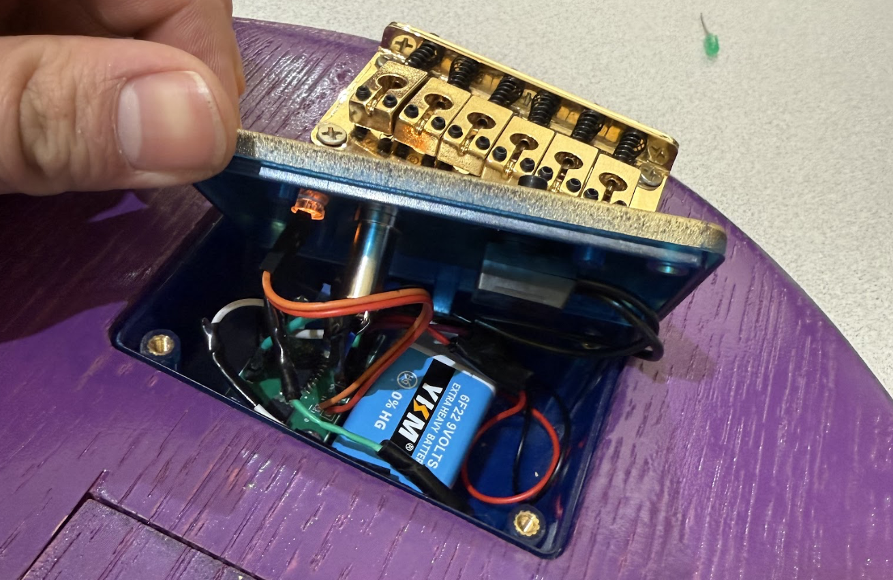
Blue box with the lid open — PCB screwed onto standoffs, 9V battery wired in, LED glowing orange through the lid hole.
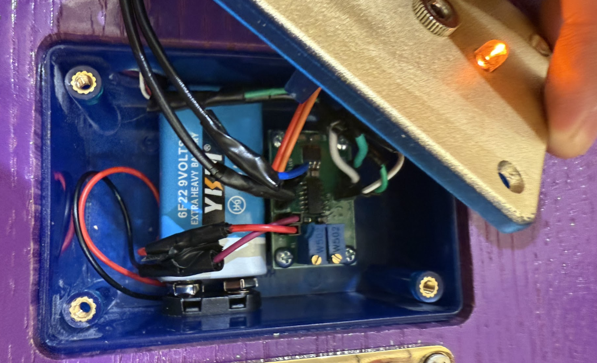
Blue box seated in the routed guitar body cavity — 9V battery, wiring, and PCB packed inside the 3D-printed enclosure.
The Finished Guitar
With the blue box installed, strings fitted, and the jack plugged into a speaker — the circuit worked. Plugging in the cable lit the orange LED. Strumming produced audio output. Plucking the open G string produced a noticeably quieter, thinner tone compared to other strings — the 196 Hz fundamental visibly attenuated on the oscilloscope and audibly reduced through the speaker.
The overall volume was lower than other groups, consistent with the gain shortfall documented above. The notch function itself was demonstrably correct and passed checkoff.
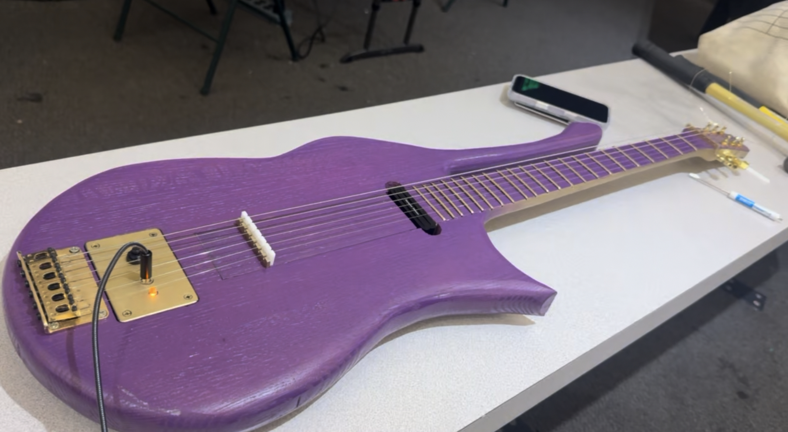
Finished and tested — LED on, cable plugged into a speaker, orange indicator glowing from the gold lid of the blue box. The coolest guitar of the class, no shade.
Key Components
| Component | Value / Part | Role |
|---|---|---|
| U3 — Op-Amp | LM324 (quad) | Gain stage + notch filter amplification |
| U4 — Charge Pump | TC7660 | Generates ±9V from single 9V battery |
| R1 — Trimmer | 3.612 kΩ (TRIM_3296W) | Notch frequency fine-tune (R of twin-T) |
| R3 — Trimmer | 1.8455 kΩ (TRIM_3296W) | Notch frequency fine-tune (R/2 of twin-T) |
| RF / RG | 9 kΩ / 1 kΩ | Inverting gain stage — sets gain of ~10× |
| C1, C2, C3a, C3b | 0.22 µF (SMD 0805) | Twin-T filter capacitors |
| Cout2 | 10 µF | Output coupling capacitor |
| Power supply | 9V (6F22) battery | Powers the entire circuit through TC7660 |
| Board size | 1.4" × 0.9" | 4-layer: Front, GND, PWR, Back |
| Target notch | 196 Hz | Fundamental of unfretted G string |
Reflections
The main takeaway from the electrical side of this project was the gap between simulation and physical implementation. The LTSpice model placed the notch correctly at 196 Hz — but translating that to a working board required continuity checks, re-soldering, and iterative potentiometer tuning that the simulation never anticipated.
The gain shortfall — achieving approximately 4× rather than the target 10× — was traced to distortion introduced during initial assembly that was partially corrected but not fully recovered. The board was reviewed and approved by the course instructor and TA. It was a useful reminder that gain accuracy and filter accuracy are independent problems, and that a working filter is still a working filter.
This project was completed in collaboration with Braden Ling, USC EE 202L, Spring 2026. The wood component of the guitar is documented separately under Electric Guitar — Wood Component.